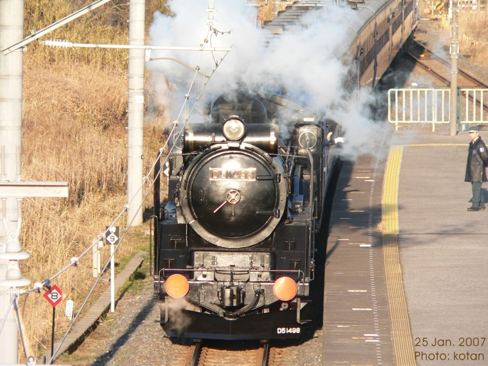
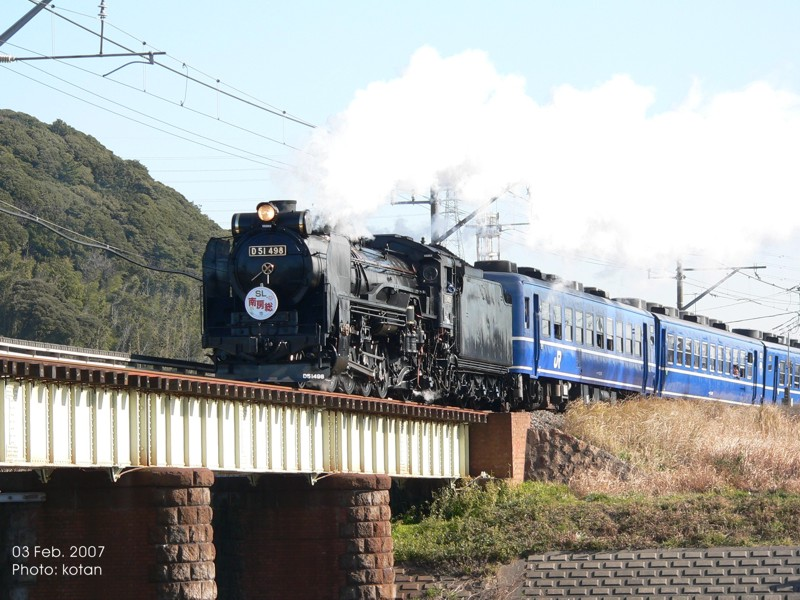

見知らぬ街にて
D51
蒸気機関車を見るのは子供の頃以来ですが，
D51が私の仕事場のすぐ近くを走りました。
JRの企画で2月に何回か "木更津" <-> "館山" 間を走るそうですが，
その試運転だったようです。
その後，何枚か写真を撮ることが出来ました。勇壮な姿をご覧下さい。
蒸気機関車を見るのは子供の頃以来ですが， D51が私の仕事場のすぐ近くを走りました。 JRの企画で2月に何回か "木更津" <-> "館山" 間を走るそうですが， その試運転だったようです。
その後，何枚か写真を撮ることが出来ました。勇壮な姿をご覧下さい。
青堀駅の跨線橋から
(木更津駅へ牽引されているときのシーンです)

青堀駅の跨線橋から
(木更津駅へ牽引されているときのシーンです)
2月3日当日の画像を幾つか...
2月3日当日の画像を幾つか...

鉄橋通過中の蒸気機関車 (サウンドあり)